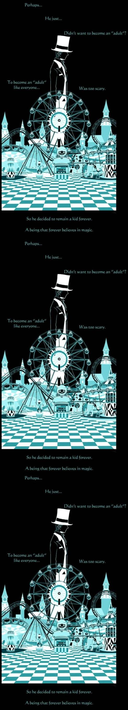

Magic Time


 Калиостро
Калиостро
Алли-Вад (А. А. Вадимов-Маркеллов)
Арутюн Акопян и его сын Амаяк Акопян
Джон Генри Андерсон
Вэл Валентино (Леонард Монтано)
Крисс Энджел
Дэвид Копперфильд
Гарри Гудини
Ури Геллер
Дэвид Блейн
Ханс Клок
Комю (Николя-Филипп Ледрю)
Жан Эжен Робер-Уден
Джон Невиль Маскелайн
Джеймс Рэнди
Лэнс Бартон
П. С. Соркер
Деррен Виктор Браун
Владимир Данилин
Зураб Вадачкория
Рафаэль Циталашвили
Сергей Савка
Жан Содель
Сергей Щукин
Илья Символоков
Динамо / Dynamo (Стив Фрейн / Steve Frayne)